01
Online ön görüşme
İlgilendiğiniz tedavi, genel sağlık durumunuz ve beklentileriniz hakkında ilk görüşme yapılır. Bu aşama, Türkiye’ye gelmeden önce sorularınızı netleştirmek ve hangi bilgilerin gerekli olduğunu anlamak içindir.
Yurt dışından obezite veya metabolik cerrahi için Türkiye’ye gelmeyi planlıyorsanız; ilk görüşmeden tıbbi değerlendirmeye, hastane sürecinden ülkenize dönüş ve uzun dönem takibe kadar yolculuğun her adımını anlaşılır biçimde keşfedin.

Uluslararası hastalarda süreç, yalnızca ameliyat gününden ibaret değildir. Tıbbi değerlendirme, seyahat planlaması, hastane süreci, iyileşme ve takip birlikte ele alınır.
İlgilendiğiniz tedavi, genel sağlık durumunuz ve beklentileriniz hakkında ilk görüşme yapılır. Bu aşama, Türkiye’ye gelmeden önce sorularınızı netleştirmek ve hangi bilgilerin gerekli olduğunu anlamak içindir.
Boy, kilo, yaş, mevcut hastalıklar, kullanılan ilaçlar ve önceki ameliyatlar gibi bilgiler değerlendirilir. Gerekli görülen rapor veya tetkiklerin güvenli şekilde nasıl paylaşılacağı açıklanır.
Cerrahi veya cerrahi dışı seçenekler; tıbbi geçmiş, vücut ölçümleri, eşlik eden hastalıklar ve klinik değerlendirmeye göre kişiye özel ele alınır. İnternet üzerinden kesin ameliyat kararı verilmez.
Uçuş ve geliş planınız klinik zamanlamayla birlikte değerlendirilir. Konaklama, transfer veya diğer hizmetler yalnızca gerçekten planlanan kapsam içinde ele alınır.
Hastaneye kabul, muayene, gerekli preoperatif değerlendirmeler ve anestezi değerlendirmesi tamamlandıktan sonra uygun bulunan tedavi uygulanır.
Ameliyat sonrası klinik takip, beslenme, hareket ve ilaç önerileri değerlendirilir. Taburculuk kararı iyileşme sürecine göre verilir.
Seyahat uygunluğu kişisel iyileşmeye göre değerlendirilir. Ülkeye dönüş öncesinde gerekli öneriler ve varsa takip belgeleri paylaşılır.
Bariatrik cerrahi uzun dönem takip gerektirebilir. Kilo seyri, beslenme, vitamin-mineral desteği ve eşlik eden hastalıkların izlemi planlanabilir.

Doç. Dr. Erol Vural, obezite ve metabolik hastalıkların cerrahi tedavisi alanında çalışan bir hekimdir. Uluslararası hastalar için amaç; doğru değerlendirme, açık iletişim ve tedavi sürecinin her aşamasında klinik kararların tıbbi gerekliliklere göre verilmesidir.
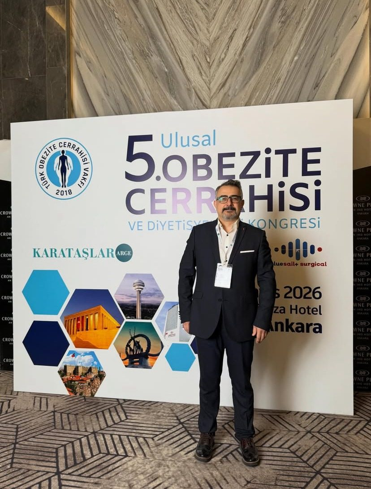
Metabolik ve Bariatrik Cerrahi
Her yöntem her hasta için uygun değildir. Aşağıdaki seçenekler yalnızca genel bilgilendirme içindir; kesin tedavi seçimi klinik değerlendirme ile yapılır.
Tek bir yöntem herkes için doğru değildir. Aşağıdaki karşılaştırma yalnızca yöntemlerin temel yaklaşımını anlatır.
| Method | Basic approach | Assessment |
|---|---|---|
| Tüp mide | Mide hacminin azaltılması | Klinik değerlendirme |
| Gastrik bypass | Mide ve bağırsak sisteminde cerrahi değişiklik | Klinik değerlendirme |
| Metabolik cerrahi | Metabolik hastalıkların cerrahi açıdan değerlendirilmesi | Kişiye göre |
| Diğer seçenekler | Hastanın durumuna göre farklı yaklaşımlar | Kişiye göre |
İlk görüşmeden sonra ekibin isteyebileceği bilgileri ve seyahat öncesi hazırlıkları birlikte netleştirmek, sürecin daha düzenli ilerlemesine yardımcı olur.
Uluslararası hastanın Türkiye’ye gelişi, klinik planlama ile seyahat planının birlikte düşünülmesini gerektirir. Havalimanı, konaklama, hastane ve muayene adımları kişiye göre değişebilir.
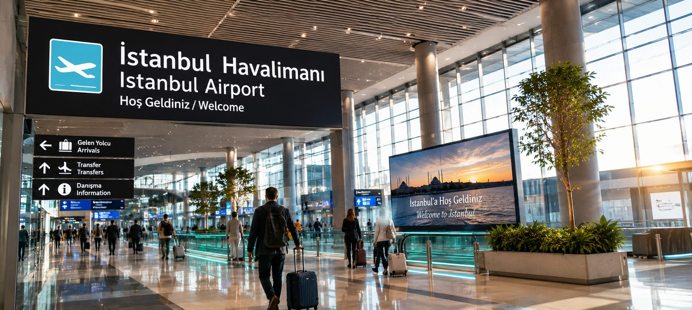
İstanbul Havalimanı gibi uluslararası ulaşım noktalarından geliş planı, klinik zamanlama ile birlikte değerlendirilir.
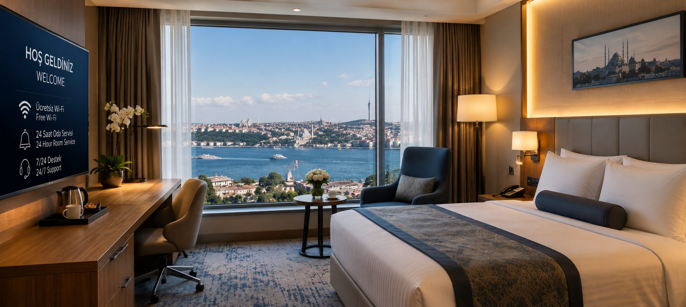
Dinlenme ve hastane kontrollerine uygun konaklama planı, ihtiyaçlara göre ayrıca ele alınabilir.
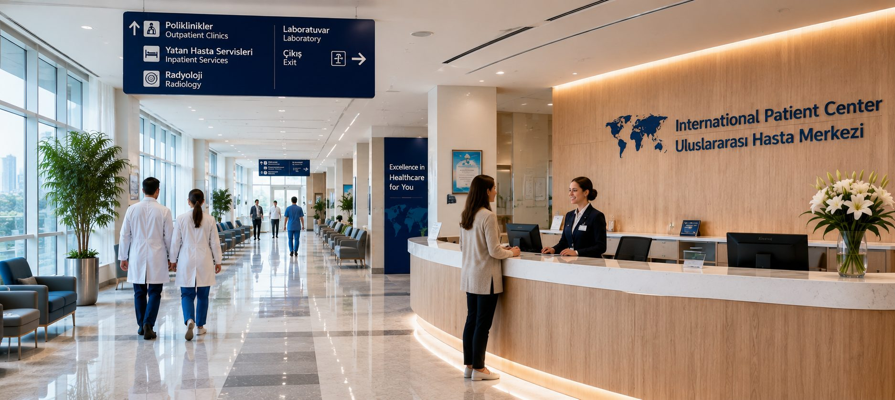
Planlanan değerlendirme ve tedavi için ilgili sağlık kuruluşuna geçilir.
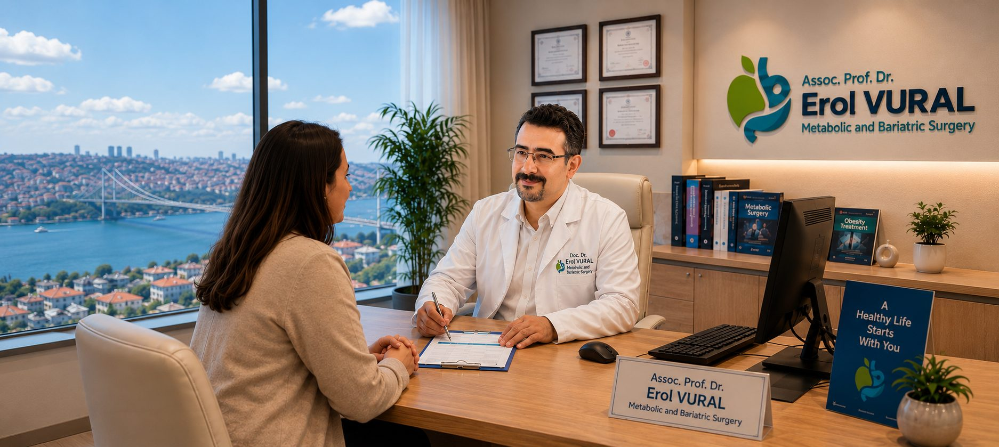
Cerrahi öncesinde yüz yüze değerlendirme ve gerekli tetkikler tamamlanır.
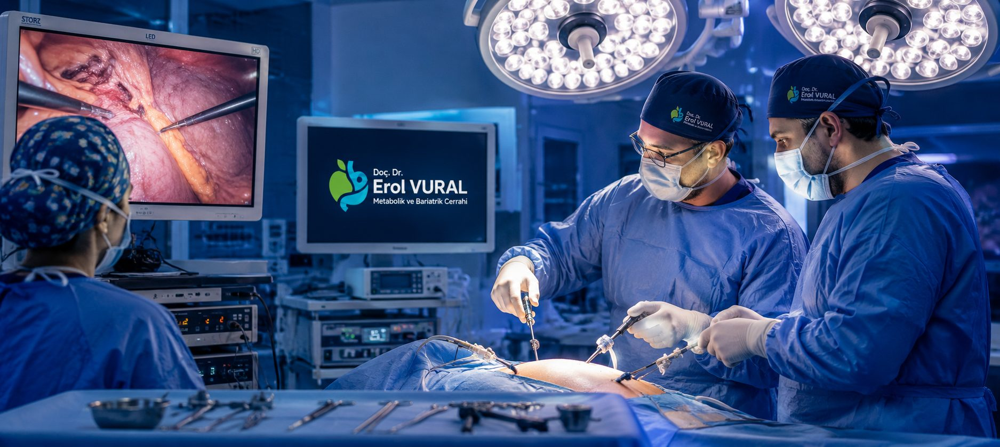
Uygunluk ve klinik karar doğrultusunda planlanan işlem gerçekleştirilir.
Ameliyat günü; hastaneye kabulden preoperatif değerlendirmeye, anestezi görüşmesinden ameliyat sonrası takibe kadar bir dizi klinik adımdan oluşur.
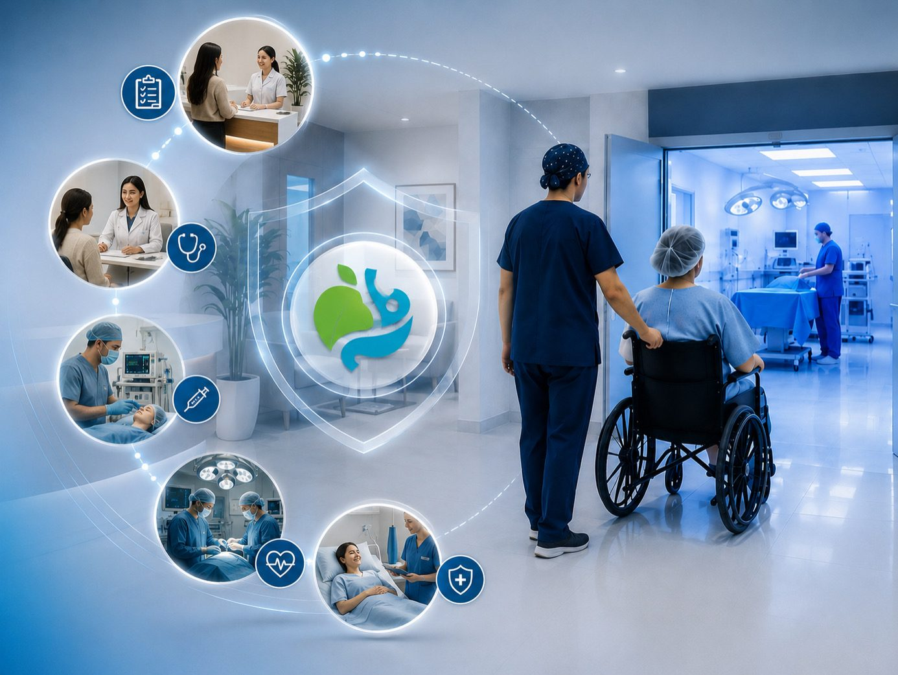
Kimlik ve planlanan süreç doğrulanır; gerekli birimlere yönlendirme yapılır.
Gerekli muayene ve tetkikler klinik ihtiyaca göre tamamlanır.
Anestezi açısından gerekli değerlendirme ve hazırlıklar yapılır.
Uygun bulunan hastalarda planlanan cerrahi işlem gerçekleştirilir.
Klinik durum, ağrı, beslenme, hareket ve diğer gerekli parametreler izlenir.
Cerrahi sonrası dönem, tedavinin önemli bir parçasıdır. İlk günlerde klinik takip ve beslenme planı öne çıkar; sonraki dönemde hareket, vitamin-mineral desteği ve kontroller kişiye göre düzenlenebilir.
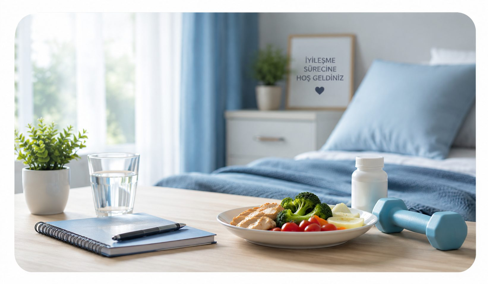
Klinik takip ve iyileşmenin değerlendirilmesi.
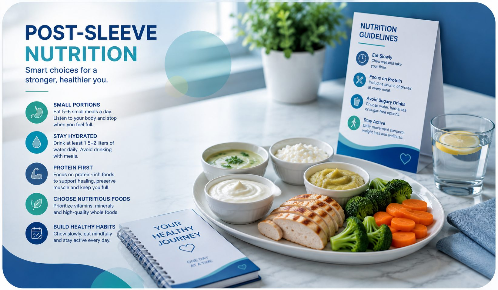
Cerrahi sonrası beslenme planının sağlık ekibi önerilerine göre uygulanması.
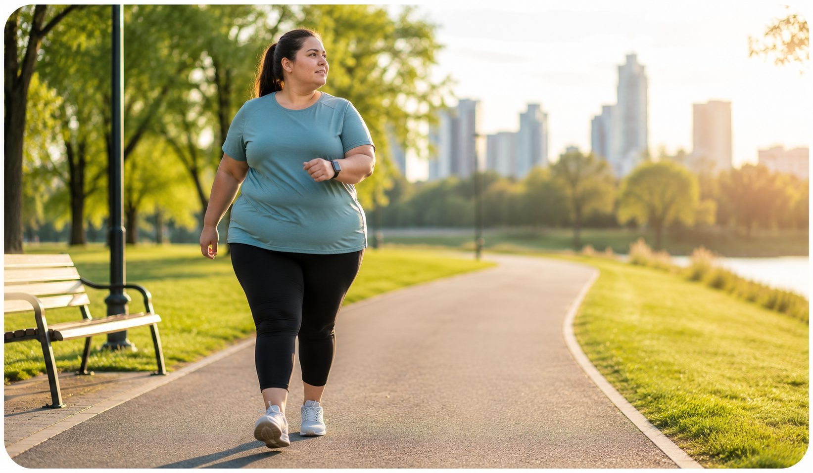
Güvenli ve kademeli mobilizasyon için klinik önerilere uyulması.
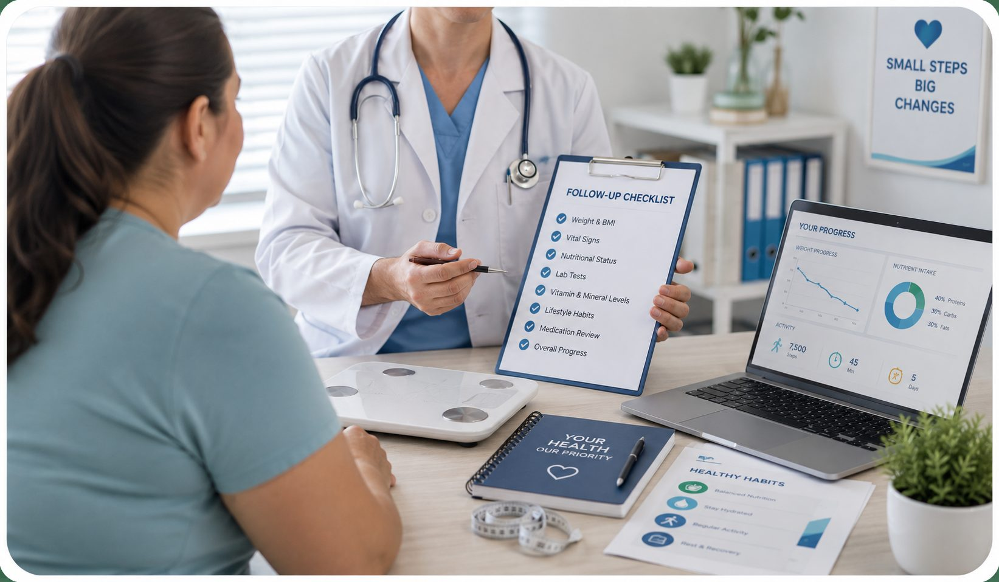
Planlanan klinik kontrollerin ve gerekli tetkiklerin sürdürülmesi.
Bariatrik cerrahi uzun dönem takip gerektirebilir. Ülkenize dönüş sonrasında kilo seyri, beslenme, vitamin-mineral desteği ve eşlik eden hastalıklar izlenmelidir. Uygun olduğunda ameliyat özeti ve takip önerileri yerel sağlık ekibinizle paylaşılabilir.

Tedavi programınızın uygun olduğu dönemlerde İstanbul’u yalnızca konaklama noktası olarak değil, tarihi ve kültürel mirasıyla keşfedebileceğiniz bir şehir olarak da değerlendirebilirsiniz. Aşağıdaki kısa rehber, şehirde geçireceğiniz zamanı planlamanıza yardımcı olmak için hazırlanmıştır.

İstanbul’un en güçlü tarih katmanlarından birini taşıyan Ayasofya, yüzyıllar boyunca farklı dönemlerin izlerini bir arada barındırmıştır. Bugünkü yapı 6. yüzyılda Bizans İmparatoru Justinianus döneminde inşa edilmiştir.

Sultanahmet Meydanı’ndaki cami, 17. yüzyılın başında Sultan I. Ahmed döneminde inşa edilmiştir. İç mekânındaki İznik çinileri nedeniyle Mavi Cami adıyla da bilinir.

Topkapı Sarayı, Osmanlı hanedanının İstanbul’daki uzun süreli yönetim merkezlerinden biri olmuştur. Avluları, koleksiyonları ve Boğaz’a bakan konumuyla tarih meraklıları için önemli bir duraktır.

Galata çevresi, tarihî sokakları ve Beyoğlu’na uzanan şehir dokusuyla İstanbul’un en karakteristik bölgelerindendir. Kule, Haliç ve çevresindeki tarihî yarımadayı panoramik olarak izlemek için simgesel noktalardan biridir.

İstanbul Boğazı Avrupa ve Asya kıtalarını birbirinden ayırırken şehrin iki yakasını aynı şehir yaşamında buluşturur. Ortaköy çevresi, kıyı yürüyüşü ve Boğaz manzarası için öne çıkan noktalardan biridir.

Kapalıçarşı, İstanbul’un tarihî ticaret merkezlerinden biridir. Çok sayıda dükkânı ve geleneksel alışveriş kültürüyle şehrin tarihî çarşı deneyimini görmek isteyen ziyaretçiler için dikkat çekici bir duraktır.
Tedavi sonrasında kendinizi iyi hissettiğiniz ve sağlık ekibinizin seyahate uygun gördüğü ölçüde, yakın çevrede kısa ve yorucu olmayan ziyaretler tercih edilebilir. Yoğun yürüyüş, uzun süre ayakta kalma ve kalabalık programlar yerine dinlenme aralıkları bulunan esnek bir plan yapmak daha uygundur.
Gerçek hasta görselleri yalnızca açık rıza ve yürürlükteki kurallara uygunluk sağlandığında yayımlanmalıdır. Görseller belirli bir tıbbi sonucu garanti etmez; işlem öncesi/sonrası görsellerin yayımlanmasında gerekli tarih ve onam kontrolleri yapılmalıdır.
Uluslararası bir tedavi kararı verirken yalnızca sonuç beklentisini değil; hekim, sağlık kuruluşu, tıbbi değerlendirme, iletişim ve takip sürecini birlikte değerlendirmek önemlidir.

Uzmanlık alanı ve mesleki kimlik açıkça belirtilir.

Tedavi seçimi kişisel klinik değerlendirmeye dayanır.

Süreç, hizmet kapsamı ve klinik belirsizlikler açıkça anlatılır.

Muayene, tetkik, ameliyat ve takip adımları açıklanır.

Tedavi sonrası takip ihtiyacı göz önünde bulundurulur.

Uluslararası hastanın sorularını güvenli ve düzenli biçimde iletebilmesi hedeflenir.
İlk görüşme ve mevcut belgelerin incelenmesi uzaktan başlayabilir. Kesin cerrahi karar için yüz yüze klinik değerlendirme gerekebilir.
Herkes için tek bir süre yoktur. Tetkikler, operasyon, iyileşme ve klinik önerilere göre değişebilir.
Herkes için geçerli tek bir uçuş tarihi yoktur. Seyahat uygunluğu klinik iyileşmeye göre değerlendirilmelidir.
İlk değerlendirme için ekip tarafından istenen temel bilgiler paylaşılabilir. Ayrıntılı tıbbi kayıtların güvenli kanaldan iletilmesi tercih edilmelidir.
Bu karar tek bir internet bilgisine göre verilmemelidir. Tıbbi geçmiş, vücut ölçümleri, eşlik eden hastalıklar ve klinik değerlendirme birlikte ele alınır.
Acil belirtilerde bulunduğunuz yerde acil sağlık hizmetine başvurun ve mümkün olan en kısa sürede cerrahi ekiple iletişime geçin.
Adınızı, ülkenizi ve iletişim bilgilerinizi paylaşın. Ayrıntılı tıbbi kayıtları açık form üzerinden göndermeyin; gerekli belgelerin güvenli şekilde nasıl iletileceği ekip tarafından açıklanabilir.
Başvurunuz başarıyla iletildi. Sağlık ekibimiz bilgilerinizi değerlendirecek ve en kısa sürede sizinle iletişime geçecektir.
WhatsApp’tan bilgi alınSağlık bilgileri özel nitelikli kişisel verilerdir. Ayrıntılı tıbbi kayıtları açık iletişim kanallarından göndermeyin.